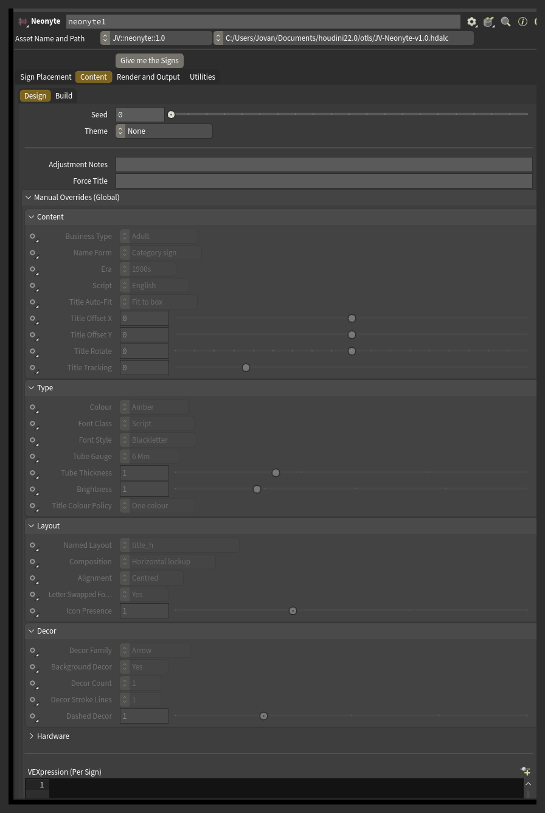
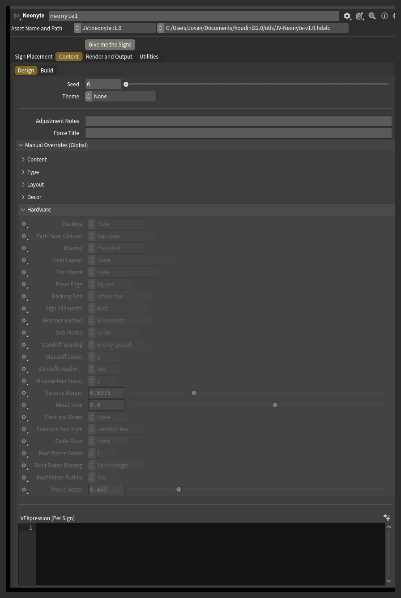

Advanced rows
52 rows, split across six sections: Content 10, Type 7, Layout 5, Decor 5, Hardware 23, Aging 2.
Every row lives in Manual Overrides (Global) and applies to every sign on the street. To change one sign only, use that sign's card Note, or the VEXpression (Per Sign) field.
Three rows have no Manual Overrides entry of their own, because the ordinary control in the Content tab already does the job: Theme, Deterioration and Deterioration Amount. They are listed below with the rest so the pre-plan VEXpression hooks for them can be found in one place.
Every row has a small Auto / Custom menu beside it. On Auto, the engine decides the value. On Custom, the value beside it is forced.
Hardware rows have no pre-plan VEXpression hook. To change hardware from a VEXpression, use the VEXpression Override.

